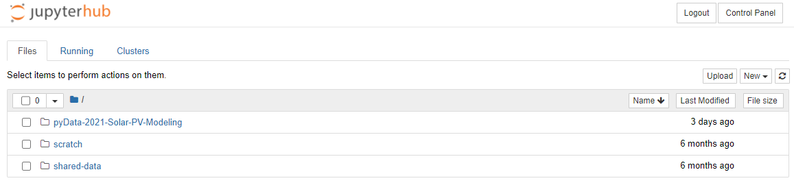
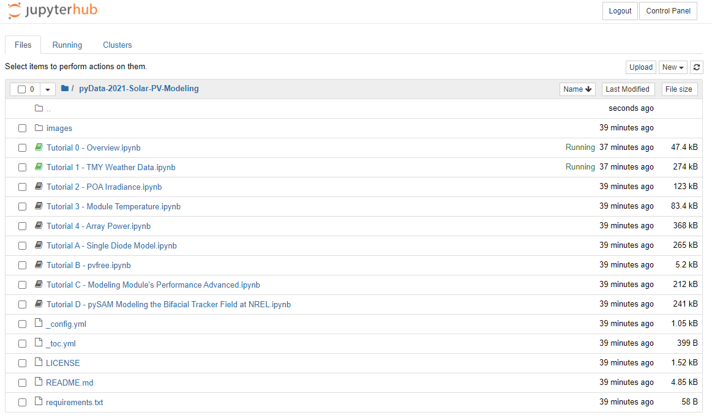

pyData 2021 Global - Solar Modeling Tutorial¶
This tutorial focuses on PV computing packages, Python, data wrangling with Pandas, and data viz
Tutorial Summary:¶
Tutorial 0: Introduction to the tutorial, the lesson plan, and resources (~30 minutes)
Tutorial 1: Access TMY weather data and visualize monthly irradiance data (~30 minutes)
Tutorial 2: Calculate solar position, plane-of-array irradiance, and visualize average daily insolation (30 minutes)
Tutorial 3: Estimate module temperature from ambient (~20 minutes)
Tutorial 4: Use POA irradiance and module temperature to model output power from a single module (~20 minutes)
Tutorial 5: Combine modules to form strings, calculate inverter efficiency and total array output (~independent study)
Tutorials Appendices: More tutorials on a variety of fun topics (~independent study)
Tutorial Setup¶
These tutorials are designed to run on Jupyter, a browser based interactive notebook that allows you to run the tutorial in the cloud without any additional setup. On the day of the tutorial, you can log into the tutorial here.
THIS IS A 2-STEP PROCESS¶
STEP 1: click this –> http://pvsc-python-tutorial.ml/
STEP 2: click this –> https://pvsc-python-tutorial.ml/hub/user-redirect/git-pull?repo=https://github.com/PVSC-Python-Tutorials/pyData-2021-Solar-PV-Modeling&branch=main
The first time you visit the tutorial, you will need to create an account. Use any username and password you like.

The first time you log into the tutorial, you will only see the scratch and shared-data folders.

After you log in, you need to download the tutorial from this GitHub repository by following this link (step 2):
You only need to download the repository once, but you can always use either link to start the tutorial during the conference. From now on you will see the pyData-2021-Solar-PV-Modeling tutorial folder in the list.

Click the folder to open, and you’ll see the full list. Click Tutorial 0 - Overview.ipynb to get started.

Sometimes, if you are idle too long, the tutorial dies. Just click the link to the tutorial again to reconnect.
Jupyter Book docs¶
The full tutorial is now also hosted as a beautiful Jupyter book. This book has navigation, search, and can even run code cells interactively. Check it out!
https://pvsc-python-tutorials.github.io/pyData-2021-Solar-PV-Modeling/index.html
My Binder¶
After the conference the tutorials will remain available here on GitHub, and you can run the tutorial anytime in Binder by clicking the following link:

Locally¶
You can also run the tutorial locally with miniconda by following thes steps:
Install miniconda.
Clone the repository:
git clone https://github.com/PVSC-Python-Tutorials/pyData-2021-Solar-PV-Modeling.git
Create the environment and install the requirements. The repository includes a
requirements.txtfile that contains a list the packages needed to run this tutorial. To install them using conda run:conda create -n pvsc48 jupyter -c pvlib --file requirements.txt conda activate pvsc48
Start a Jupyter session:
jupyter notebook
Use the file explorer in Jupyter lab to browse to
PVSC48-Python-Tutorialand start the first Tutorial.
Licensing¶

This work is licensed under a Creative Commons Attribution 4.0 International License.